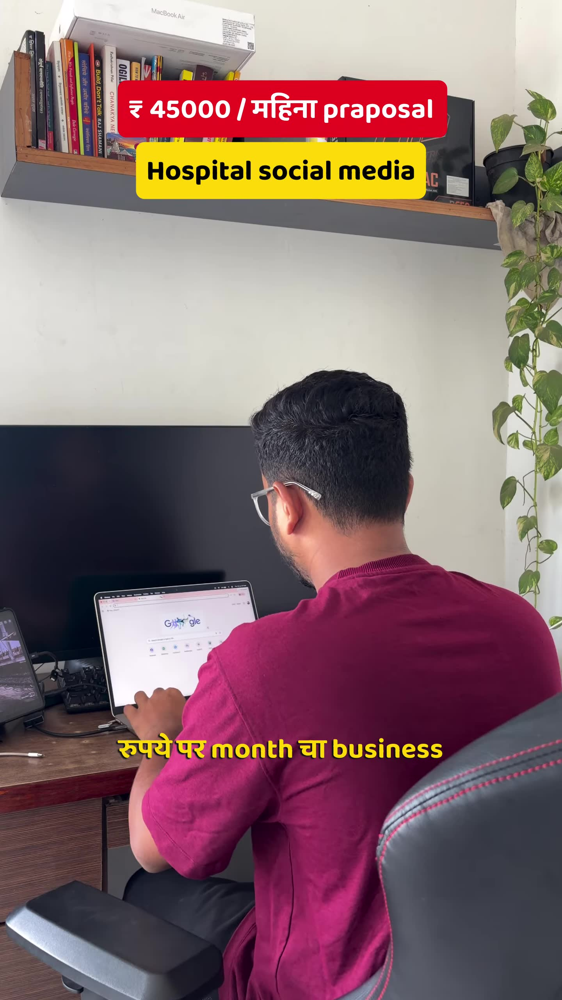
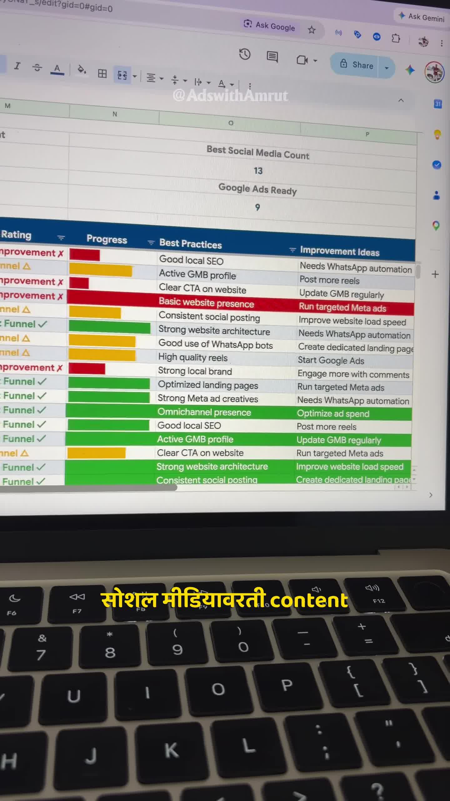

Executive Summary
Securing monthly marketing retainers from local hospitals, surgical centers, and multi-specialty clinics in Tier-2 and Tier-3 regional cities requires moving beyond generic "social media management." Hospital directors care about patient footfalls, specialized treatment inquiries (orthopedics, maternity, pediatrics, cardiology), and doctor authority.
In this case study, performance marketing strategist Amrut details the exact structure of a ₹45,000/month (~$540/mo) hospital marketing proposal, outlining the audit-first discovery methodology, the 6-tier patient acquisition funnel, and scalable regional expansion frameworks.
Core Visual Demonstrations


The Audit-First Discovery Method
Never pitch hospital management with a cold, generic capabilities deck. Conduct a 15-minute diagnostic audit prior to outreach:
- Google Search Presence: Does the hospital rank in the Google Maps 3-Pack when patients search "best maternity hospital in [City]" or "orthopedic surgeon near me"?
- Google Business Profile (GBP) Audit: Analyze review volume, average rating, response time to negative reviews, and missing direct booking buttons.
- Content & Authority: Are doctors sharing short video explanations answering common patient anxieties, or is the social feed filled with sterile holiday greeting graphics?
- Inquiry Latency: Submit a test lead via their contact form or WhatsApp button. If response time exceeds 15 minutes, highlight this leakage to the director.
The 6-Service Healthcare Acquisition Funnel
| Funnel Layer | Service Deliverable | Patient Acquisition Impact |
|---|---|---|
| 1. Conversion Website | High-speed mobile landing pages with single-tap calling and appointment scheduling. | Converts paid and organic traffic into verified consult bookings. |
| 2. GBP Optimization | Weekly post updates, medical category hierarchy, geo-tagged clinic photos, and review generation. | Dominates high-intent local map pack searches with zero ad spend. |
| 3. Doctor Authority Reels | Scripting, filming, and editing short educational video clips with lead surgeons and specialists. | Establishes deep trust and medical credibility before the patient arrives. |
| 4. Meta Ads Targeting | Radius-targeted (10–15km around hospital) Facebook & Instagram ads for specific specialties. | Drives volume for elective procedures, health checkup packages, and maternity care. |
| 5. Google Search Ads | Exact-match search campaigns targeting urgent medical inquiries. | Captures patients actively seeking immediate consultations. |
| 6. WhatsApp Automation | Automated CRM chatbots sending instant greeting, doctor schedules, and appointment reminders. | Reduces no-show rates by 40% and captures leads after clinic hours. |
Regional Agency Scalability
Once this standardized audit and proposal framework is proven on one hospital, it can be replicated across non-competing Tier-2/Tier-3 regional markets (e.g., Satara, Karad, Sangli, Kolhapur), creating a predictable high-margin agency growth engine.